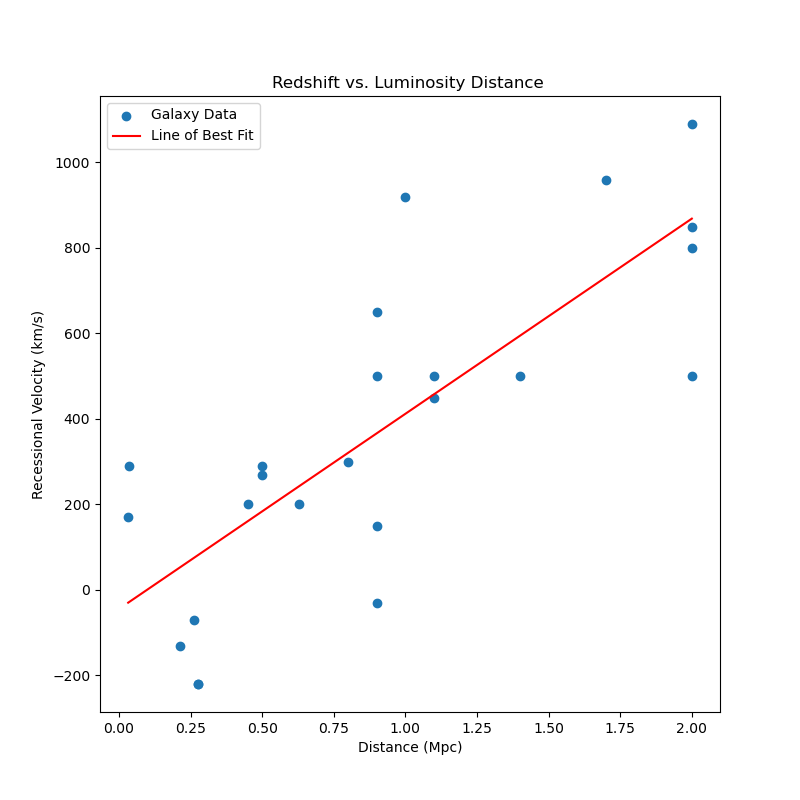

Background
In 1917, Albert Einstein published his paper describing the general theory of relativity. However, in this paper, Einstein assumed a static universe (\(\omega = 1 \)). Just over ten years later, Hubble published an article in 1929 where he presented empirical evidence that we instead live in an expanding universe. By observing the redshift of distant galaxies, Hubble derived his famous equation: \[v = H_0 D \]
Known as Hubble’s Law, this equation states galaxies are moving farther away at a speed proportional to their distances. If we examine Hubble’s data explicitly:
From his infamous formula, his data gives a Hubble constant \(H_0 \approx 450 \). Despite applying the correct equation, Hubble incorrectly derived his own constant because he did not look far enough away. Supplied with more sensitive instruments, scientists can derive much more accurate values for Hubble’s constant and cosmological parameters. For further information, refer to the theory page for further information on how we derived our values.